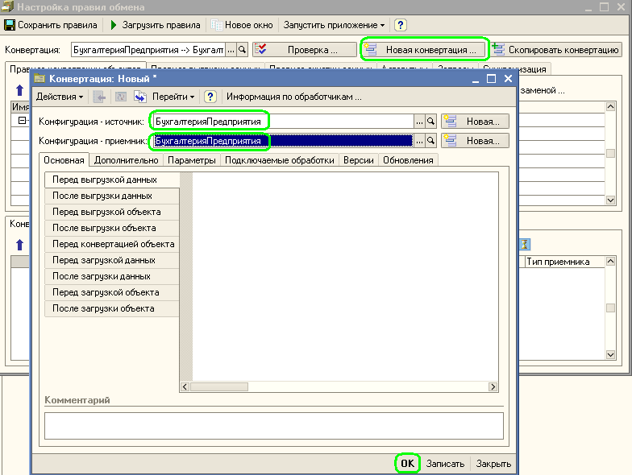
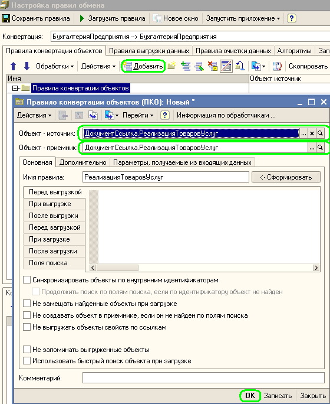
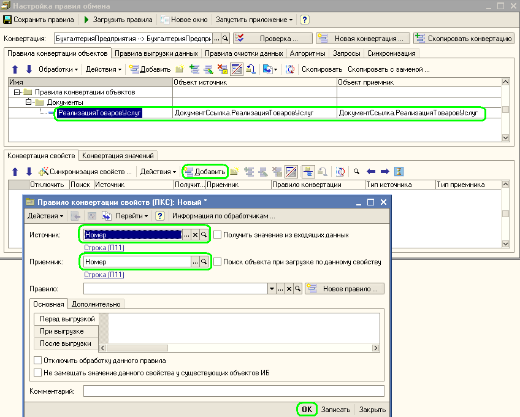
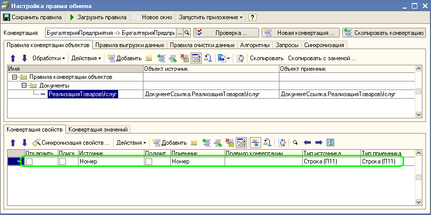

Мы знаем что такое правила Конвертации объектов, свойств и значений и для чего они нужны. Теперь рассмотрим подходы к созданию таких правил.
После того, как были созданы новые правила обмена данными, задали конфигурацию источник и приемник, сохранили новую Конвертацию, у нас нет ни одного правила конвертации объектов.

Можно создать правила конвертации объектов самостоятельно. Для этого достаточно добавить новый элемент на закладке "Правила конвертации объектов".

При этом нужно указать объект в информационной базе источнике и соответствующий ему объект в информационной базе приемнике. После сохранения нового правила конвертации объектов программа предложит автоматически создать правила конвертации объектов и свойств. При этом будут автоматически сопоставлены все одноименные реквизиты объектов, одноименные предопределенные реквизиты, одноименные значения перечислений. Если тип реквизита не является примитивным, то для соответствующих типов источника и приемника так же будет создано правило конвертации объектов. Таким образом программа поможет Вас сопоставить одноименные объекты и их одноименные реквизиты и значения.
Правила конвертации объектов можно создать и иначе. В пункте меню "Обработки" панели управления правилами конвертации объектов выберите пункт "Синхронизация объектов". После этого программа автоматически сопоставит все одноименные объекты в двух конфигурациях и предложит по ним создать правила конвертации объектов. В форме выбора для создания правил конвертации объектов Вы можете отказаться от создания некоторых правил, убрав в строке флажок.
Для тех строк соответствия объектов в которых остались флажки программа создаст правила конвертации объектов.
Теперь, когда правила конвертации объектов созданы можно перейти к заданию правил конвертации свойств этих объектов. Установим курсор на то правило конвертации объектов для которого необходимо установить соответствие свойств. Достаточно нажать на кнопку "Добавить" в панели управления правилами конвертации свойств для создания нового правила.

В открывшейся форме нового правила конвертации свойств достаточно указать соответствие между реквизитом объекта источника и объектом приемника. Например, можно задать, что реквизиту "Номер" документа "Реализация товаров и услуг" информационной базы источника соответствует реквизит "Номер" документа "Реализация товаров и услуг" информационной базы приемника. После чего, нажав на кнопку "ОК" будет записано новое правило конвертации свойств.

Можно поступить точно так же и с другими реквизитами. Но если реквизитов много, то это занятие может затянуться на длительное время. Программа может самостоятельно создать необходимые правила конвертации свойств для одноименных реквизитов. Для этого достаточно выбрать пункт меню "Синхронизация свойств" в панели управления правил конвертации свойств.

Программа показывает список свойств объектов которые можно автоматически сопоставить. Устанавливая и убирая флажки в строках этого соответствия можно согласится или отказаться от создания правил. Флажок "Рекурсивно создавать правила конвертации, свойств и значений" управляет технологией создания правил конвертации свойств для не примитивных типов. Например, если реквизит "ВалютаДокумента" с типом "СправочникСсылка.Валюты" и для этого реквизита создается правило конвертации свойств, то автоматически будет создано правило для конвертации объектов с типом "СправочникСсылка.Валюты".
Точно по тому же принципу можно действовать создавая правила конвертации значений.
Действия при "ручном" сопоставлении значений:

Действия при автоматическом сопоставлении значений:

Остается только указать программе как в информационной базе приемнике искать объекты, соответствующие объектам в информационной базе источнике.